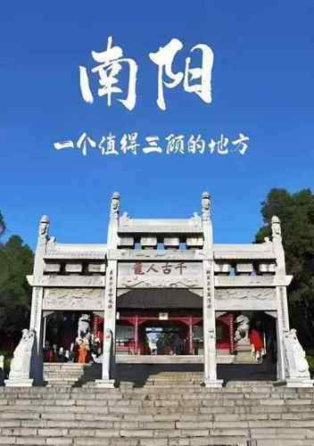
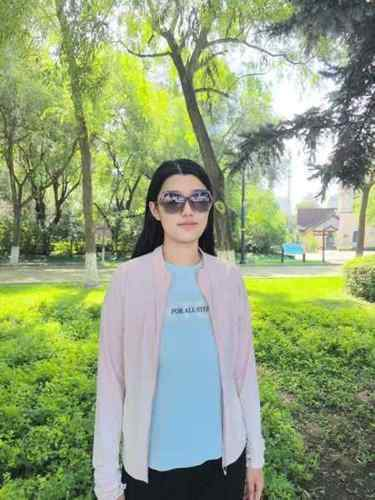

艾月凌云队 云端宛乡，芯间艾月。
我们是以"云端宛乡，芯间艾月"为主题，由高校学子组成。这个暑期，我们走进南阳，聚焦艾草与月季两大特色产业，实地调研其种植、加工及文化内涵，同时深入挖掘南阳厚重的历史文脉。借助云端技术与青年视角，我们记录"艾"与"月"背后的科技价值与人文温度，用扎实的调研和青春力量，助力地方特色产业发展与文化传播。
了解更多我们是以"云端宛乡，芯间艾月"为主题，由高校学子组成。这个暑期，我们走进南阳，聚焦艾草与月季两大特色产业，实地调研其种植、加工及文化内涵，同时深入挖掘南阳厚重的历史文脉。借助云端技术与青年视角，我们记录"艾"与"月"背后的科技价值与人文温度，用扎实的调研和青春力量，助力地方特色产业发展与文化传播。
了解更多

南阳是"世界艾草之乡"和"中国月季之乡"。艾草产业在此已形成从种植、研发到深加工、康养服务的完整链条；南阳月季则以其品种繁多、供应量巨大而闻名全国，不仅是城市绿化的主力军，更承载着深厚的产业价值。两大特色产业相互交织，构成了南阳独特的地域名片，但其品牌文化附加值、科技应用深度仍有广阔的挖掘空间。
南阳是国家历史文化名城，楚汉文化的重要发源地。从医圣张仲景以艾传世，到历代文人吟咏月季的风雅，这片土地上的"艾"与"月"早已超越草木本身，成为中医药文化、民俗传统与文人精神的载体。挖掘其背后的历史文脉，是将地方特色资源转化为文化认同的关键。
在数字化与新媒体蓬勃发展的今天，青年学子走出校园、深入产业一线，不再局限于传统的走访记录。我们团队借助云端协作、影像记录、数据整理等多元手段，将实地调研与线上传播相结合，既是对艾草、月季产业的深度观察，也是一场以青年视角重新发现南阳、讲述宛乡故事的当代实践。
当前，地方特色产业亟需更年轻的表达方式和更广泛的文化辐射力。我们此行，正是希望通过扎实的调研，梳理艾草与月季的科技价值、经济价值与人文价值，用文字、影像和创意传播，为地方特色产业的发展与南阳文化的活态传承注入青春动能。
从一株艾草到一朵月季，从田间地头到云端传播，我们希望通过此次调研，不仅形成一份有深度、有温度的社会实践报告，更以图文、视频、新媒体等多元形式，让南阳的艾与月季被更多年轻人看见。未来，我们将持续关注地方特色产业发展，推动校地合作与产教融合，把论文写在祖国大地上，让青春在乡村振兴的实践中绽放光彩。此行不只是调研，更是一次扎根乡土的学习与成长。我们相信，当古老艾草遇见现代科技，当传统月季融入创意传播，南阳的"一草一花"必将焕发出跨越地域与代际的生命力。而我们作为青年一代，也将在丈量土地、记录真实的过程中，找到属于自己的责任与方向。艾月凌云，宛乡可期。
南阳，地处豫西南，是国家历史文化名城、楚汉文化的重要发祥地。在这片底蕴深厚的土地上，"一株艾草"与"一朵月季"不仅是特色物产，更成长为极具影响力的产业符号和文化名片。
南阳是"世界艾草之乡"，医圣张仲景的故里。这里出产的艾草叶片肥厚、出绒率高、药效成分充足，自古便以"宛艾"之名享誉四方。如今，南阳艾已突破传统艾灸、洗浴的单一应用，形成了集种质保护、标准化种植、精深加工、智能灸疗器械、艾草日化与康养服务于一体的全产业链条。从张仲景《伤寒杂病论》中的艾灸古法，到现代科技赋能的"智慧康养"，南阳艾草承载着中医药文化的活态传承，也正以更年轻的姿态走进大众生活。
南阳是中国最大的月季苗木繁育基地，素有"中国月季之乡"的美誉。这里的月季种类繁多、色彩绚烂，不仅供应全国城乡绿化美化，还远销海外。每年月季花事盛大时，整座城市都沉浸在一片馥郁芬芳之中。月季之于南阳，不仅是重要的经济支柱，更融入了市民的生活美学，从园林景观到文化节庆，从精深加工的花茶、精油到文创衍生品，一朵花撬动了一条充满活力的"美丽产业链"。
南阳的历史文脉中，"艾"与"月"本就有着深邃的文化意象。艾，是医者仁心、是端午民俗、是草木对健康的守护；月季，是宛城风物、是文人吟咏、是四季不息的生机。当世界艾乡遇见中国月季之乡，楚汉大地的雄浑气质便多了一分芳香与柔情。如今，我们以青年视角重新审视这对"双子星"，触摸其背后的科技价值与人文温度，用调研记录、云端传播的方式，让南阳的艾与月季走出地域，成为更多人感知中华药香文化、花木文化的生动窗口。
活动报道将陆续发布
精彩瞬间即将呈现
实践感悟敬请期待
月季，花型优美、色彩丰富，花期长，被誉为"花中皇后"，兼具观赏价值、经济价值与文化意蕴。
艾草，香气浓郁，可灸可药，被誉为"百草之王"。南阳是医圣张仲景故里、世界艾草之乡，所产艾叶绒质细腻、药效上乘，承载着深厚的中医药文化底蕴。
南阳，楚汉文化发祥地，国家历史文化名城。医圣张仲景故里，文脉悠远，积淀深厚。
以青年之力普及反诈知识，帮助群众识骗防骗，共同守护财产安全与生活安宁。
深入社区基层，开展便民服务与志愿帮扶，用行动传递温暖，共建和谐美好家园。
深入调研艾草与月季等特色产业，记录种植、加工、销售全链条，以青年视角洞察产业发展之路。
蓝桥杯黑龙江省省一
CCPC黑龙江省级三等奖
ACM实验室队员
LacunaBench作者之一
入党积极分子
校级三等奖学金
院双创中心部员
职业规划大赛三等奖
校级一等奖学金
蓝桥杯黑龙江省省三
CCPC黑龙江省级三等奖
计算机团体天梯赛三等奖
ACM实验室队员
校艺术团街舞队队员
院双创中心部员
院团委志愿部部员
职业规划大赛二等奖
班级高数课代表

院网采编部副部长
院国家安全日志愿者
院校园开放日志愿者
校考评活动中心部员
校大四街志愿者
创新创业课路演大赛二等奖
校级二等奖学金
社会实践活动先进分子
计院学生会部员
院足球队队员
C语言程序设计课代表
入党积极分子
校级二等奖学金
寒假社会实践先进个人
校报编辑部部员
校青年媒体中心部员
院考评中心管理部部员
东林清风志愿者协会会员
东林爱鸟协会会员
院考评办公室成员
校校资助勤工部成员
院足球队队员
共青团团员
入党积极分子
校级二等奖学金
寒假社会实践先进个人
校报编辑部部员
校青年媒体中心部员
院考评中心管理部部员
东林清风志愿者协会会员
东林爱鸟协会会员
校篮球队队员
院双创中心部员
班级体育委员
寒假社会实践先进个人
东林爱鸟协会会员
共青团员
关注我们，获取最新云端宛乡活动动态
搜索"云端宛乡 芯间艾月"
关注@云端宛乡 芯间艾月
搜索"云端宛乡 芯间艾月"
搜索"云端宛乡 芯间艾月"
我们将定期发布活动报道、实践感悟和进度信息
云端宛乡 芯间艾月

{kind=link}
{kind=link}
{kind=link}
{kind=link}
{kind=link}
{kind=link}
{kind=link}
{kind=link}
{kind=link}